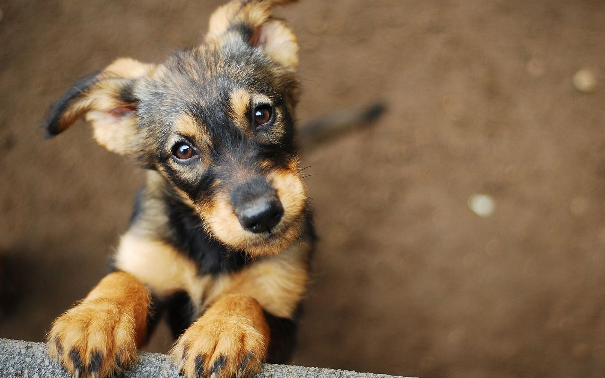
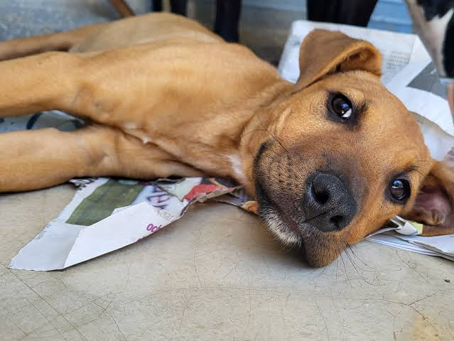
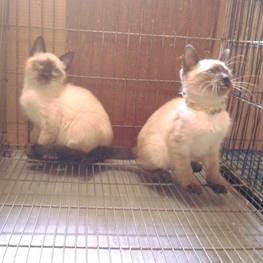

Galeria visual
en esta seccion podras ver nuestra lista de animalitos que todavia no encuentran una familia y en caso de que te interece adoptar podrias adoptar uno de ellas mandando un mensaje a nuestro gmail
Bruno

bruno es un perrito que fue rescatado de la calle cuando recien nacio actualmente tiene 6 meses, es mu juegueton y tiene mucha energia
Max

Max es un perro noble, tranquilo y muy obediente. Le encanta dar paseos al aire libre y compartir momentos en familia. Es ideal para hogares que buscan un compañero fiel.
Luna y Lola

Luna y Lola son dos hermanitas inseparablemente unidas. Tienen un carácter dulce y sociable. Buscan un hogar donde puedan ser adoptadas juntas y recibir mucho amor.
Milo

Milo es un perrito curioso y súper mimoso. Le encanta buscar atención y jugar con juguetes. ¡Se ganará tu corazón en un segundo!
Rojelio,brandom y kiki

Este trío lleno de energía y alegría está buscando una familia responsable. Son muy amigables y se adaptan fácilmente a recibir mucho cariño.
Rocky